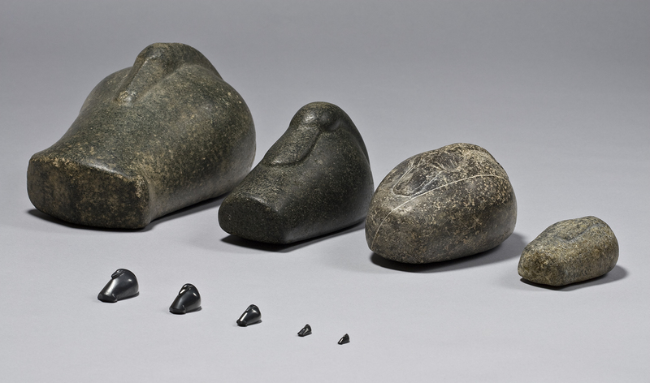
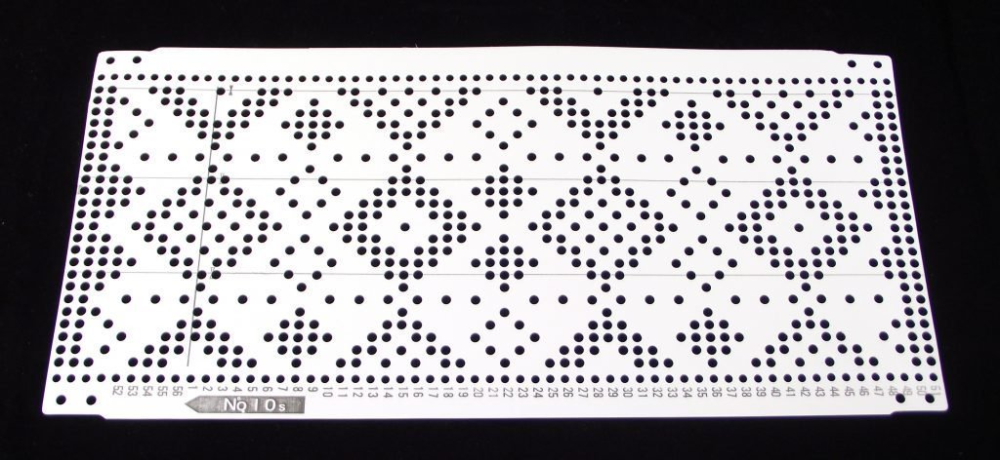
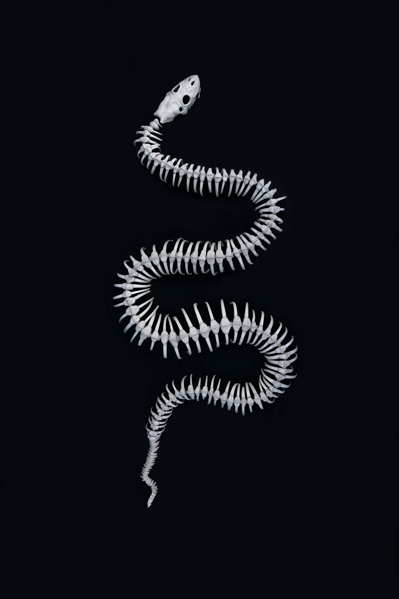

September 20, 2026
On Research and Editing Down: the Difficult Act of Curating a Collection of Fascinating Objects

Since the beginning of my work on the book "Encoding and Recording the World - A Historical Journey Through Material Knowledge Systems" a year ago, I have researched and classified about 350 "datartefacts" (or what I define as "objects that function as documents"). A small curated selection is already visible on the "Collection" section of the website here: datartefact.com/collection, and I constantly have to resist the urge to add too many entries in there, too fast.
The full collection is divided between roughly 70% of historical and archeological objects (mostly found in museum collections and academic research papers), and 30% of contemporary art and data-sculptures (from galleries, art museums or artists' websites). The research has developed into many different sub-topics along the way, from the history of metrology to cognitive archeology, the history of mathematics and writing, the history of computing, the history of textile production, photography, sound recording, etc.
After months of pushing the research and collecting process — and also building a rather heteroclite bibliography — I am faced with a collection that associates objects such as duck-shaped stone Mesopotamian weights, knitting machine punched cards, or the pieces of contemporary artists such as Lily Glass and her breathtaking series "Quantifying Care" and "A Rib for Every Woman," the latter being a snake skeleton made of ceramics, with each of its ribs representing a woman of importance in the life of the artist.
Yet all 350 of them do match my selection criteria: they encode or record information about the world in a non-written form, and in that sense, they all do "function as documents."


Now that I have the definitive table of contents, and this rather enormous collection, it is time to recenter the book around its core thesis. Then problems begin, because the book has a rather big ambition, which is to demonstrate that embedding information into physical objects is not recent, and is in fact a vast and diverse technical tendency spanning most cultures and eras that not only precedes the invention of writing, but continued alongside it.
To achieve this demonstration, the book associates together historical objects, industrial artefacts and contemporary art work. It does NOT present a chronological progression from "primitive technologies" to the inevitable "progress" that is writing, counting and eventually computing. Instead, it tries to restore the complexity and ontological nature of each object in the context it was produced, while showing how those objects addressed a similar core problem or follow one same methodology to transpose information into matter.
The Mesopotamian weights were made by the authorities to regulate taxes and trade around 2,000 BCE in Iraq. They were "state certified" and altering them was considered a criminal offense. They had a key role related to political power, the state and public affairs that is deeply informative about the Isin-Larsa period and society. The knitting punched cards are technical artefacts made of perforated paper, encoding a pattern for a machine. They were mass-produced in factories in the USA in the 1960s, and belong more to the history of industrial design or textile production than to state-powered metrology. And the contemporary snake sculpture by Lily Glass has been made as a unique piece of self-expression and artistic form in 2022, something that belongs more (or will belong) to the history of art.
How to make sure the reader follows me through those rather surprising associations of ideas and objects? And how do I ensure they can do so with ease while traveling the full span of human history, and through topics like photography, Inka khipu, or how Korea was the first country in the world to establish a standardized rain gauge system in the 1400s?
So the editing began, and it's tough.
I basically have to rewrite the whole book with a stricter lens, cutting all the "scholars have said" and "as mentioned in this paper" citations to make more room for my own voice and thesis among the many prestigious artefacts that now surround me.
It will likely take a few months to reach a steady and smaller selection while ensuring the cohesiveness throughout all 11 chapters. Surprisingly enough, the original inspiration for this book is my interest in data-sculpture and data-physicalization, so it is rather grounded in contemporary concepts. I want it to show this in every single chapter, not just at the end, as if sculpting data compiled by a computer was the "epiphany" of tangible information object making by humans. In fact, I'd like to demonstrate the opposite.
I also need to make sure I am not providing the reader with a cool but very long exhibition catalog. Though I'll be absolutely interested in the idea of creating and presenting such an exhibition one day.